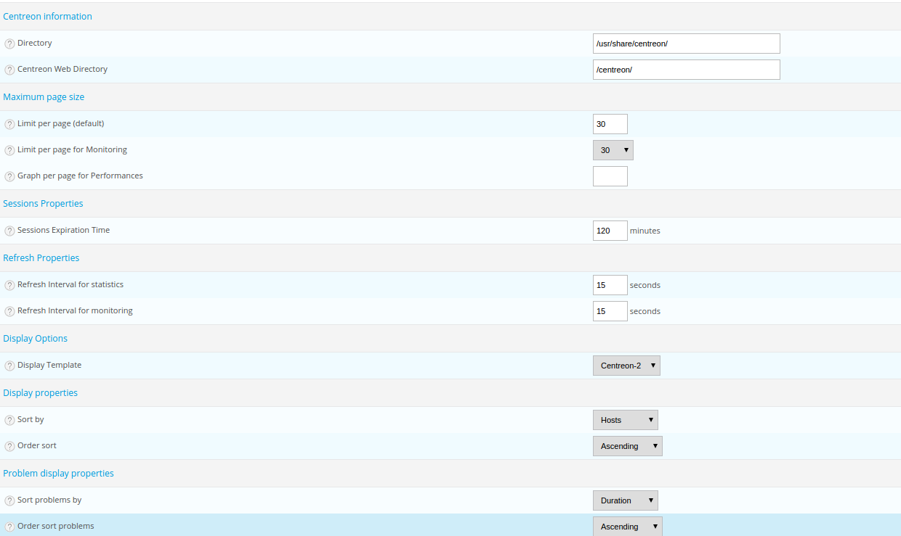

Administration options of the Centreon platform¶
The following options enable us to change the settings of the Centreon architecture.
Centreon UI¶
This part covers the configuration of the general options of the Centreon web interface.
- Go into the menu: Administration ==> Parameters ==> Centreon UI
The following window is displayed:
- Directory indicates the directory where Centreon is installed
- Centreon Web Directory field indicates the web directory on which Centreon is installed
- Limit per page (default) field defines the number of objects displayed per Configuration page
- Limit per page for Monitoring field defines the number of objects displayed per page in the Monitoring menu
- Sessions Expiration Time field, expressed in minutes, indicates the maximum session duration
- Refresh Interval for statistics field, expressed in seconds, indicates the refreshment interval for the statistics page
- Refresh Interval for monitoring field, expressed in seconds, indicates the refreshment interval for the objects on the monitoring page
- Display Template field indicates the theme to be used for the Centreon web interface
- Sort problems by field is used to choose how to sort the incidents in the Monitoring menu
- Order sort problems field indicates the display order for incidents, by rising or falling order of gravity
- Enable Autologin box authorises the users to log into the web interface via the autologin mechanism
- Display Autologin shortcut box serves to display the connection short-cut at the top right
- Enable SSO authentication box enables SSO authentication
- SSO mode field indicates if the authentication should take place only by SSO or using local authentication as well (Mixed)
- SSO trusted client addresses field indicates which are the trusted clients for SSO. The trusted clients are separated by commas
- SSO login header field indicates the variables of the header that will be used as a login / pseudo
- Timezone field indicates timezone of your monitoring server
- If the Enable strict mode for host parentship management box is checked, the operator cannot define parental relationships of a host in objects supervised by different pollers.
- Centreon Support Email field indicates the e-mail address of the Customer’s service support centre for the Centreon platform. This e-mail address will be displayed at the bottom of the page on the link Centreon Support
Monitoring¶
This part covers the general options of the real time monitoring interface.
- Go into the menu: Administration ==> Parameters ==> Monitoring
- Click on Monitoring
- Default Engine list defines the type of scheduler by default
- Interval Length field indicates the time interval in seconds used to programme the checks and notifications
- Images Directory field defines the image directory in which the medias are stored
- Plugins Directory field defines the directory where monitoring plugins are stored
- Start script for broker daemon field contains the path to the init script of the broker
- Centreon Broker socket path Centreon Broker socket path for send external command
- Directory + Mailer Binary field contains the path to the executable file for sending e-mails
- Maximum number of hosts to show and Maximum number of services to show lists contain the maximum number of hosts or services to be displayed in the overall view (menu: Home ==> Home)
- Page refresh interval field defines the data refreshment interval in the overall view
- The boxes in the Default acknowledgement settings and Default downtime settings categories define the options by default that will be checked or not during definition of an acknowledgement or of a downtime
CentCore¶
This part can be used set the operation of the CentCore process.
- Go into the menu: Administration ==> Parameters ==> Centcore

- Enable Broker Statistics Collection field enables the retrieval of statistics from the Centreon Broker by CentCore. This can be a blocking option because the reading of the pipe can be a blocking action
- Timeout value for Centcore commands field can be used to define a timeout for local commands and commands via SSH process.
LDAP¶
This part can be used to configure the connection to LDAP directories.
To add a new directory:
- Go into the menu: Administration ==> Options ==> LDAP
- Click on Add
- Configuration name and Description fields define the name and the description of the LDAP server
- Enable LDAP authentication field serves to enable authentication via the LDAP server
- Store LDAP password field can be used to store user passwords in the database, useful to authenticate users in the event of loss of connection with the LDAP
- Auto import users field serves to import the users of the LDAP directory automatically into Centreon. By clicking on Import users manually, you can chose the users that you want to import
Note
If the Auto import users option is checked, the LDAP settings of any new user who logs into the Centreon interface will automatically be imported into Centreon (name, first name, e-mail address, etc.). ACL profiles will be applied on access (link to ACL). However, if this option is not checked, only the users imported manually will be able to authenticate.
- LDAP search size limit field can be used to limit the size of user searches
- LDAP search timeout field can be used define the maximum time for the LDAP search
- Contact template field defines the contact template that will be linked to all the users imported from this LDAP directory
- Use service DNS field indicates if it is necessary to use the DNS server to solve the IP address of the LDAP directory
- LDAP servers field can be used to add one or more LDAP directories to which Centreon will connect
The table below summarises the settings to add an LDAP server:
| Column | Description |
|---|---|
| Host address | Contains the IP address or DNS name of the LDAP server |
| Port | Indicates the connection port to access the LDAP |
| SSL | Indicates if the SSL protocol is used for the connection to the server |
| TLS | Indicates if the TLS protocol is used for the connection to the server |
- Bind user and Bind password fields define the user name and the password for logging to the LDAP server
- Protocol version field indicates the version of the protocol using to login
- Template list can be used to pre-configure the search filters for users on the LDAP directory. These filters serve to propose, by default, a search on the MS AD or of Posix type directories.
Note
Before any import, check the default settings proposed. If you have not selected a Model, you will need to define the search filters manually by filling in the fields.
With Centos 6, it’s possible to not check server certificate, follow procedure :
Add the following line in file “/etc/openldap/ldap.conf” :
TLS_REQCERT never
Then restart Apache :
/etc/init.d/httpd restart
RRDTool¶
This part can be used to configure the RRDTool graphs generation engine and the sizes of the typefaces used for their presentation.
- Go into the menu: Administration ==> Parameters ==> RRDTool

- Directory + RRDTOOL Binary field defines the path to the RRDTool executable
- The fields belonging to the categories Title Properties, Unit Properties, Axis Properties, Legend Properties and Watermark Properties are used to define the typeface and character size for the property selected
- Enable RRDCached field serves to enable the RRDcached process (only works with the Centreon Broker)
- TCP Port field defines the port on which RRDcached listens (don’t enable the TCP connection)
- UNIX Socket path field defines the path to the Unix socket
Warning
Don’t enable RRDCacheD unless your monitoring platform encounters too many disk accesses concerning the writing of data in RRD files.
Debug¶
This part can be used to configure the enabling of the logging of activity on Centreon processes.
- Go into the menu: Administration ==> Parameters ==> Debug

- Logs Directory field defines the path where event logs will be recorded
- Authentication debug box can be used to log authentications to the Centreon interface
- Monitoring Engine Import debug box enables logging of the scheduler debugging
- RRDTool debug box enables logging of the RRDTool graph engine debugging
- LDAP User Import debug box enables logging of debugging of the import of LDAP users
- SQL debug box enables the logging of SQL requests executed by the Centreon interface
- Centcore Engine debug box enables logging of Centcore process debugging
- Centreontrapd debug box enables logging of the Centreontrapd process debugging